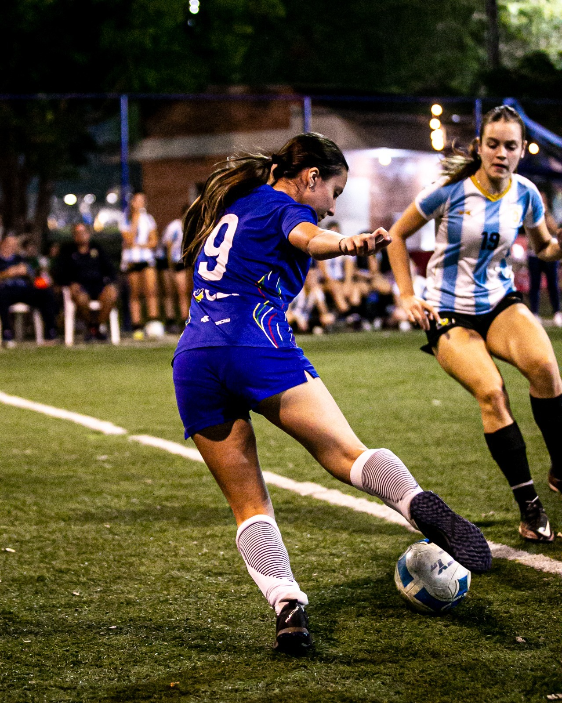
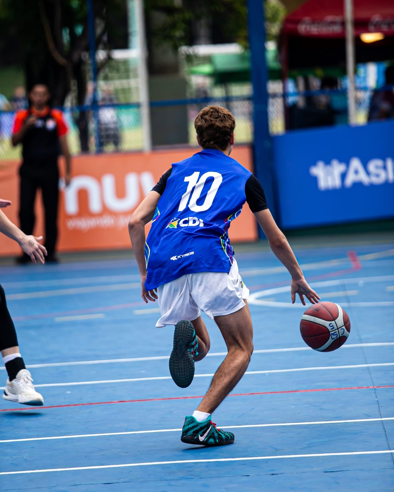
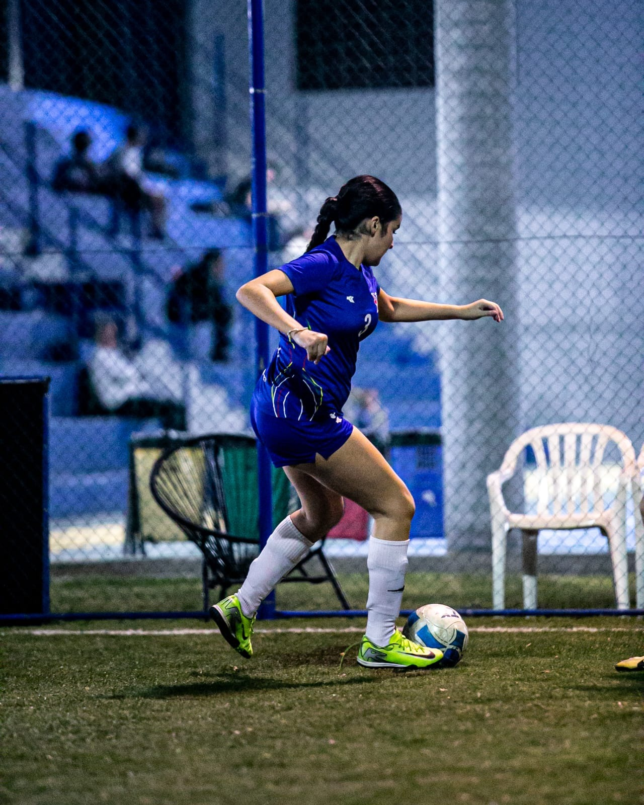
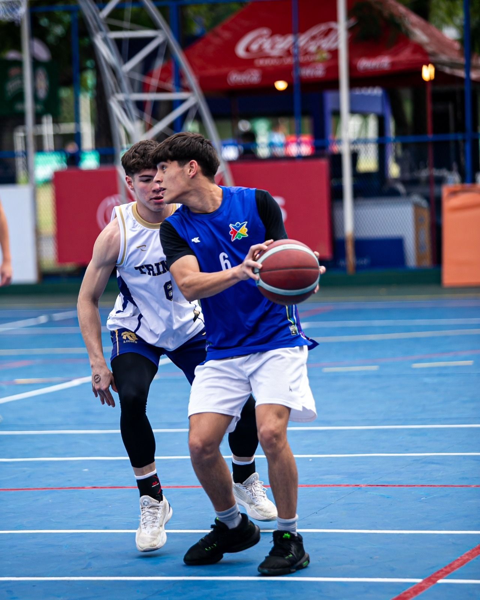
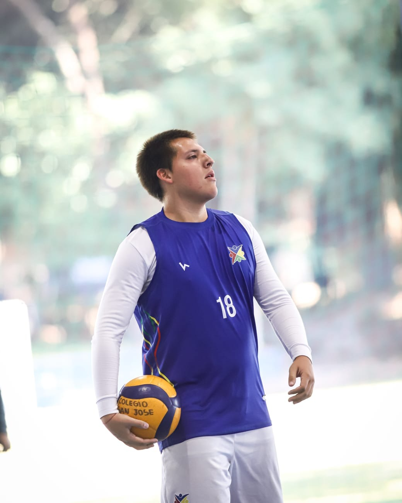
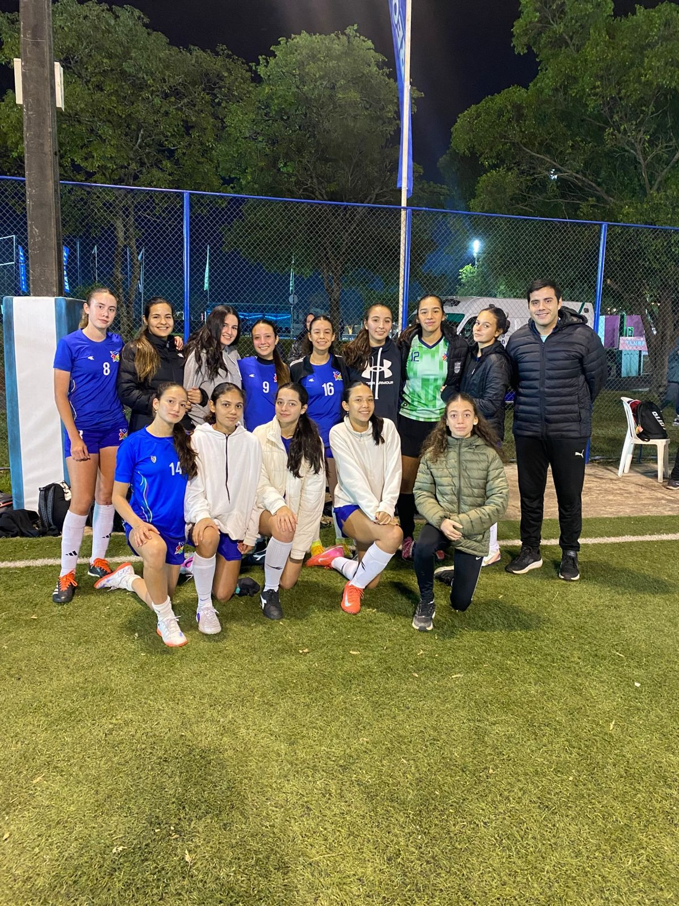
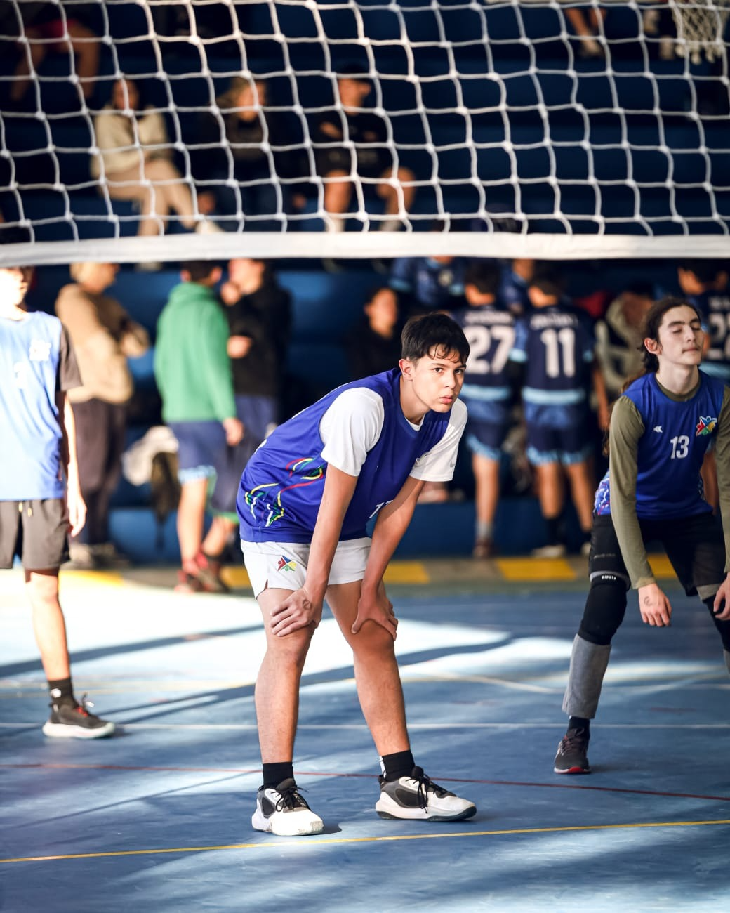

Básquet femenino tuvo un partido no tan emocionante
Las chicas de baloncesto ganaron por W.O un encuentro que prometía ser sumamente emocionante, debido a las fuertes complicaciones climáticas se entiende la ausencia de las muchachas del Colegio Maria Auxiliadora.
Jueves 28 · Intercolegial San José 2026
Futsal femenino se despide en una digna actuación
CDI1 (3)vs.(4) 1San José
Tras clasificar como mejor segundo, las chicas tuvieron que medirse por los cuartos de final ante el mejor primero de todos los grupos, el mismísimo local: el San José.
Por Gael Insfrán

Futsal femenino luchó hasta los penales en los cuartos de final.
En el gran choque que cruzó a nuestras damas de hierro contra las locales, San José golpeó primero con un gol en la primera parte. El marcador no volvió a moverse antes del descanso.
Ya en la segunda parte, tras persistir una y otra vez, finalmente llegó el grito de gol. Gabriela Gibert robó la pelota en el área rival, condujo bajo presión y finalizó con gran destreza para igualar el partido.
Consumado el tiempo regular, el encuentro se definió desde los penales al mejor de tres. La tanda se extendió hasta el sexto remate y quedó de la siguiente manera:
Penales
Turno
San José
CDI
1
Gol
Errado
2
Errado
Gol
3
Errado
Errado
4
Gol
Gol
5
Gol
Gol
6
Gol
Errado
Tristemente, las muchachas desperdiciaron una gran oportunidad que culminó con su eliminación desde los doce pasos.
Sábado 24 · Intercolegial San José 2026
Básquet masculino se despide de la competencia
CDI26vs.40CCR
Tras la desalentadora derrota del día anterior los muchachos de básquet se fueron del torneo sin sumar puntos.
Por Gael Insfrán

Básquet masculino tuvo un final bastante agrio ante Cristo.
En un encuentro donde el inicio pareció ser favorable para el CDI terminó siendo cada vez más peleado durante el primer tiempo, pero en el segundo tiempo terminó con un desenlace bastante agrio.
Para el colegio de barrio Jara donde se lo terminan dando acabando el partido con una diferencia de 14 puntos.
Sábado 23 · Intercolegial San José 2026
Triunfo y clasificación en futsal femenino
CDI2vs.0CDS
Veinticuatro horas después del partido anterior, nuestras guerreras se hicieron fuertes ante las chicas del Colegio del Sol.
Por Gael Insfrán

Futsal femenino consiguió una victoria clave ante el Colegio del Sol.
El cero se rompió temprano tras un córner ejecutado rápidamente por Sara Fridmann, que logró conectar con Martina Vera. La jugadora atropelló el área y sacó un potente disparo que terminó en la red rival.
El CDI mantuvo la ventaja durante todo el primer tiempo, mostrando mayor constancia en la posesión de la pelota y una agresividad que dio sus frutos dentro de la cancha. Para el segundo tiempo, las muchachas siguieron dominando el partido.
A falta de cinco minutos para el final, una gran recuperación de Libertad Villamayor terminó de encaminar la victoria. Desde la banda derecha, logró sacarse de encima a todo el equipo rival y remató con precisión sobre el palo izquierdo de la guardameta.
Sábado 23 · Intercolegial San José 2026
Duro arranque para básquet masculino
CDI16vs.47Trinity
Pasado el mediodía del sábado, los muchachos de básquet comenzaron el torneo con el pie izquierdo. Cayeron por 16 a 47 ante el Trinity School y complican sus chances de pasar a la siguiente ronda.
Por Gael Insfrán

Básquet masculino tuvo un debut complicado ante Trinity School.
Es un golpe durísimo que obliga al equipo a replantearse muchísimas cosas de cara al siguiente encuentro. El colegio de la República de Luque no tuvo piedad ante un CDI con pocos jugadores disponibles, una situación que terminó pasando factura con una amplia diferencia en el marcador.
La derrota dejó un resultado final de 16 a 47 y complica el panorama del equipo, que ahora tendrá que ajustar rápido para seguir con vida en el torneo.
Sábado 23 · Intercolegial San José 2026
Vóley masculino queda afuera en fase de grupos
CDI0vs.2Monseñor
Partido mañanero donde el CDI cayó con dureza y terminó con la eliminación temprana de los muchachos de vóley masculino.
Por Gael Insfrán

Vóley masculino cerró su participación en fase de grupos ante Monseñor.
Los chicos de vóley sufrieron una dura derrota en los dos sets disputados, donde fueron superados ampliamente por el rival y condicionados por errores propios. Sin dudas, fue el partido con las diferencias más marcadas en los sets en lo que va del año.
En el primer set, cayeron por 16 a 25, un resultado poco alentador. En el segundo, el Colegio Monseñor Lasagna no dio margen de reacción y se impuso de forma aún más contundente por 6 a 25.
Viernes 22 · Intercolegial San José 2026
Empate amargo en el primer partido de futsal femenino
CDI1vs.1Almenas
En la fría tardecita del viernes 22, las chicas de futsal igualaron en su debut por el torneo con un gol para cada equipo.
Por Gael Insfrán

Futsal femenino debutó con un empate intenso ante Almenas.
El marcador fue engañoso en un partido que pareció complicarse para el equipo entrenado por el profesor Sebastián Trotte en la quinta del colegio San José. Fiorella Speranza abrió el resultado con un golazo olímpico en la primera parte del encuentro.
Más tarde llegaría el empate, con un gol de cabeza por parte de una de las jugadoras del colegio de la Recoleta. Las chicas se estrenaron con una igualdad que no termina de gustar y que no refleja del todo la proyección e intensidad propuesta por el equipo.
Viernes 22 · Intercolegial San José 2026
Dante pisa fuerte ante vóley masculino
CDI0vs.2Dante
El CDI cedió puntos ante un superior Dante Alighieri, que debió trabajar el partido pero logró imponerse por dos sets a cero en el debut por la fase de grupos.
Por Gael Insfrán

Vóley masculino luchó hasta el final en un segundo set muy parejo.
El primer set comenzó ajustado para ambos equipos, que supieron aprovechar sus oportunidades para sumar puntos. Sin embargo, la balanza terminó inclinándose para el colegio de la catedral, que cerró el parcial por 19 a 25.
En el segundo set, los muchachos siguieron insistiendo y consiguieron estar por encima en varios momentos del partido. Se destacaron buenas levantadas de Ian Naumann, culminadas con fuertes remates de Juan José Paredes para conseguir puntos valiosos en los momentos de mayor tensión.
Aun así, el esfuerzo no alcanzó. El CDI volvió a caer, esta vez por un resultado que refleja mejor el sacrificio mostrado dentro de la cancha: 22 a 25.